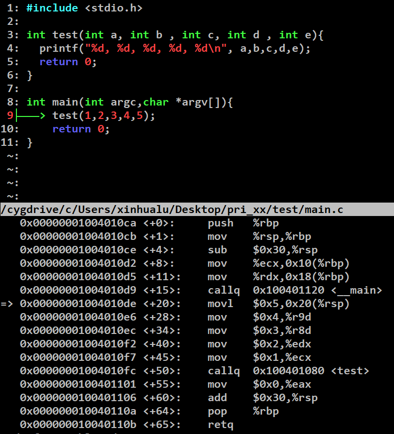

中断
中断分为上半部和下半部，上半部关中断；下半部开中断，处理可以延迟的事情。下半部有workqueue/softirq/tasklet三种方式
顶半部，硬件作答，快速响应
底半部，延时执行
local_irq_disable和disable_irq区别：
workquence
工作队列允许重新调度甚至是睡眠,
workqueue_struct d->work
INIT_WORK(&d->work, work_task);
schedule_work(&d->work); 指定cpu
destroy_workqueue()
softirq
无法sleep
静态定义软中断数组softirq_vec, 存放各自的中断处理函数softirq_action
每个CPU都有一个这样的数组，谁发起，谁执行
内核限制32个， 如mac_tx, mac_rx, tasklet, 定时器
使用：
void open_softirq(int nr, void (*action)(struct softirq_action *)) 添加中断回调函数。
raise_softirq() 触发软中断 ，就是在pre-cpu变量__softirq_pending上置位。然后local_softirq_pending() 检测那些pending， 执行invoke_softirq()
如果多个softirq pending, 按数组顺序执行。
网络收发软中断有超时机制，和次数限制。
tasklet 演示40ms
无法睡眠
pre-cpu 维护一tasklet list , tasklet一旦挂入一个cpu的tasklet表，就只会在该cpu上运行，哪怕被重新调度
使用：
DECLARE_TASKLET(&port->tasklet, callback, data)
tasklet_schedule(&port->tasklet);
tasklet_kill(&port->tasklet);
tasklet_disable(&port->tasklet);只用于disable tasklet , 而local_bh_disable/enable 是disable bh 操作 softirq/tasklet.
tasklet_enable(&port->tasklet);
runqueue
linux 就绪队列struct runqueue，每个CPU都有一个执行队列，队列中以work的形式执行每个任务。
进程
进程切换，有能力挂起正在CPU上执行的进程，和恢复执行。
进程调度由schedule()函数实现
complete 进程同步机制
struct completion {
unsigned int done;/用于同步的原子量/ 类似信号量，等待一个减1
wait_queue_head_t wait;/等待事件队列/
};
用法：
这个变量可以静态地声明和初始化：
DECLARE_COMPLETION(my_comp);
或者动态初始化：
struct completion my_comp;
init_completion(&my_comp);
wait_for_completion(struct completion *comp);等待其他事件完成 ， 将当前进程放入wait quence尾，sch超时唤醒后，循环检测done是否可用
其他事件完成后调用complete(struct completion *comp); 唤醒等待该事件的所在进程
notify 机制， 模块之间通信
struct notifier_block
{
int (*notifier_call)(struct notifier_block *self, unsigned long, void *);
struct notifier_block *next;
int priority;
};
notifier_chain_register
notifier_call_chain
devicefs
DEVICE_ATTR 需要绑定设备
struct device_attribute {
struct attribute attr;
ssize_t (*show)(struct device *dev, struct device_attribute *attr,char *buf);
ssize_t (*store)(struct device *dev, struct device_attribute *attr,const char *buf, size_t count);
};
DEVICE_ATTR 实现一些这样的设备属性结构
sysfs_create_file(&mydevice->kobj, &dev_attr_mydevice.attr); 绑定设备与设备属性
debugfs
无需绑定设备，mount debugfs 之后就可以在该目录下找到我们的节点
debugfs_create_dir(const char *name, struct dentry *parent);
debugfs_create_file(“stats”, S_IRUGO | S_IWUSR, client->debugfs,client, &debugfs_stats_ops); 绑定文件和函数操作集合
Cmake mafile工程的构建工具
简单语法：
include_directories (“${PROJECT_SOURCE_DIR}/MathFunctions”) 添加include
add_subdirectory (MathFunctions) 添加子目录
add_executable (Tutorial tutorial.cxx) 定义一个可执行文件，以及依赖的源文件
target_link_libraries (Tutorial MathFunctions) 链接库
makefile
$@ 表示目标文件
$^ 表示所有的依赖文件
$< 表示第一个依赖文件
$? 表示比目标还要新的依赖文件列表
原子操作
锁的使用：
spinlock:
死等，或者挂起当前进程
一次只有一个thread获取锁
因为可以睡眠，所以可以在BH中使用。
使用：
spin_lock 关闭内核抢占，也就是说同时只能一个进程获取这个锁，不关闭的，其他的进程抢占，抢占之后发现需要之前的进程解锁才能继续执行，就会导致死锁。
spin_lock_bh spin_lock_softirq 加了这把锁，本地软中断会被禁用。
使用场景： 比如配合tasklet，害怕被软中断sch，又请求锁住的资源，造成死锁。
spin_lock_irq 加了这把锁，本地软中断会被禁用。本地hard irq会被禁用。
spin_lock_irqsave 禁用本地hard irq ， 但是会保存中断状态，配合spin_unlock_irqrestore 进入退出，还原中断状态。
spin_lock_nested 为了配合lockdep 机制，防止误报重复上锁的
互斥锁mutex， 锁住线程共享资源
pthread_mutex_lock 无法获取该所示，进入阻塞（睡眠，这些睡眠的线程会排队访问互斥量），pthread_mutex_trylock 就不会阻塞，直接返回ebusy
读写锁rwlock
pthread_rwlock_rdlock(pthread_rwlock_t *rwpt);
pthread_rwlock_wrlock(pthread_rwlock_t *rwpt);
pthread_rwlock_unlock(pthread_rwlock_t *rwpt);
死锁的例子
2个线程持有2把锁，交叉互锁，出现死锁。
进程空间
进程为什么是4G寻址空间， 一个指针是4字节 32位，寻址能力是2的32次方，是4G.
32位linux , 一个进程空间4G，内核占1G，用户留3G，一个线程默认8M(但是因为还要包括 栈区，txt,data， heap 所以实际是大概6M)，所以最多380个左右线程
进程栈16K.
虚拟空间的3G还要分区：
①栈空间：特点是由系统管理，先进后出，里面放了局部变量、函数形参、自动变量。
②堆空间：特点是由用户管理，先进后出，我们可以用malloc、ralloc、calloc来分配空间。
alloc(sizeof(int)); 物理连续内存
vmalloc属性：可能睡眠、虚拟地址连续、物理地址不连续、size对齐到页；所以不适合小内存分配，开销较大。
realloc(p, SIZE * 2); 为已经分配空间的指针重新分配空间。
如果新的空间小于旧的空间，则指针不变，
如果大于， 则申请更大空间，然后拷贝原来的内容， 清空就的指针空间。
calloc(SIZE, sizeof(int)); 和malloc 一样，但是会全部初始化为0,不需要memset.
③数据段：数据段里面又分三块，第一块是bss，保存未初始化的全局变量；第二块是rodata，保存了常量；第三块 是.data（静态数据区）保存了初始化的全局变量还有static修饰的变量。
④代码段：存放了源代码。
kernel/userspace 空间
kernel 空间分区
userspace 空间分区
arm 终端流程：
中断流程， A系列不支持中断嵌套 M系列支持
进入中断
保存CPSR到对应cpu的SPSR_mode
关中断
切换到异常状态
保存PC到LR
设置PC到中断向量表中的对应处理函数地址中
恢复中断
恢复 SPSR_mode 到 CPSR
恢复 lr_mode 到 PC
恢复普通寄存器：R0-R7，操作sp将栈中将数据恢复。
devmem
访问dts定义的内存范围内的外设寄存器访问，操作的是物理寄存器
物理内存，虚拟内存如何组织映射。
虚拟地址空间比可用的物理内存大很多，因此只有最常用的部分才与物理页帧关联
这不是问题，因为大多数程序只占用实际可用内存的一小部分
野指针
指针在被定义的时候，如果程序不对其进行初始化的话，它会随机指向一个区域，不能判断是否为NULL。
strcpy
strcmp
strlen
排序算法有哪些
冒泡排序
选择排序
插入排序
希尔排序
归并排序
迭代法
递归法
快速排序
迭代法
递归法
c 函数型参处于那个内存空间 （可以尝试从汇编调用函数开始理解）
形参的传递在arm架构中，如果你的参数少于三个，则是通过R0或R0、R1或R0、R1、R2传递过去的，如果多余三个则是多出来的是通过堆栈传递的
实参是放栈上的
行参是一个占位符，它没有数据
发生函数调用时，实参的值会传递给形参
形参和实参虽然可以同名，但它们之间是相互独立的，互不影响，因为实参在函数外部有效，而形参在函数内部有效。
函数返回值将会又主函数开辟一个临时的新的内存空间来保存
如下例子：x86平台上，前3个参数传递给了 core 寄存器，就是arm中的R0/R1/R2通用寄存器，后面的参数压栈了

2分法查找
AT 命令
lcd 原理
frambuffer 机制
http ftp TCP/IP 协议
spsr
cpsr[31:28/条件标志，执行汇编的算数运算时，表示运算结果]
NZCV
[27:8] 保留
[7：5 | 7:I/irq使能 6:F/快中断 5：T状态位，arm/thumb] t=1 强制进入未定义指令中断
[4:0] 模式
物理/虚拟地址映射
32位linux总地址4G 一级页表页大小4K, 共4G/4k个页，
每1M个页组成1个页目录，1M个页目录是一个固定入口地址， 存在CR3 中。
二级页表存储1M页目录 页目录地址-> CR3寄存器
一个虚拟地址的组成：
DIRECTORY [22：31] 可表示1024个页目录（PGD）
TABLE[12：21] 可表示1024个页表（PTE)
OFFSET[22：31] 可表示4096个物理内存
copy_to_user/copy_form_user
虚拟内存地址对应的物理内存与内核虚拟内存地址对应的物理内存
mmap
用户空间虚拟地址与物理地址的map 目标是在用户空间访问硬件，所有可以省去映射到kernel虚拟空间这一步。
ioremap
内核空间虚拟地址与物理地址的map
IPC 机制
信号
信号量
管道
消息队列
itouch
hexgon SDK running time logger , fastRPC
TDDI , 时序同步
屏幕基本
一个像素8bit RGB
信号发生时间
vsync 到一帧的最后一个像素 -> 发出VBP(帧后的同步时间) -> hsync 行同步信号 -> HBP行后同步时间 -> 一行像素 -> HFP行前同步信号 -> VFP帧前同步信号
android 版本更新时间节点
霍尔器件的驱动移植
霍尔器件是磁感应器件，上电后，当检测到磁性物体靠近，中断脚就会产生一个高脉冲。
1，在DWS文件中配置上电，中断等管脚，然后在DTS中编写基础配置；
2，编写一个字符驱动，内含中断注册，检测，并向上层提供调用接口。
improveTouch
1，高通android参考机外设improveTouch研发，区别于传统的第三方touch， improveTouch核心算法主要放在dsp中运算，通过userspace nativea app控制，kernel driver向input子系统转发触摸事件。
2，算法组维护adsp中的hal，算法，系统组负责平台的移植 userspace/kernel的代码维护。
3，我主要是编写 dts/driver 的代码，通过pinctrl/set_regulator等kernel api 管理硬件资源,维护usersapce的代码，开发版本的整合，wiki文档的更新。解决内部测试团队发现的bug。
4，其他芯片平台有过secureTouch的开发例子,对于新的touch驱动做一个移植，跑通。
主要是在kernel 和trustzone子系统中添加code。
crash
工具的使用，死机问题分析
mem
我理解是DDR
devmem
访问dts定义的内存范围内的外设寄存器访问，操作的是物理寄存器
http ftp TCP/IP 协议
触摸屏突然不亮检查流程
上电，reset电路，总线通信。getevent检查多点触摸协议报点是否有，是否符合报点规范。
stack
栈由高到低生长 kernel栈16K
uart 子系统
网络 子系统
misc驱动
input系统
多点触摸协议
手势检测
M7 i2c
发出从地址后，没有ack
从地址不对？ 轮寻一定范围的地址，查看是否有ack.
M7的时钟 200/300/400M
i2c 低中高时钟 100K/
Rtos 与 linux的区别
主要区别在于实时性
sn3193 类似芯片
关键参数流程
bl0,bl1,bl2,bl3 ( sanxin 4412 )的区别，与联系
- 为什么需要bootloader 存在，没有bootloader 当然可以启动系统。
有bootloader的好处，系统升级。只要将对应的image 放在某个地址，重启就可以了。不需要接烧写器烧写。 - bl0, blx 就类似于不同阶段，不同功能的bootloader, 分多个也是为了方便升级替换 （ 典型应用 : fastboot flash bootloader xxx.bin ）
BL0：三星公司固化到SOC内部的ROM（iROM），里面主要是尽可能只做uboot加载，尽可能消除其他的影响（关闭WDT、禁用IRQ、关闭cache等等），接下来就是从外设拷贝加载BL1
BL1：没什么特殊功能，特点就是经过加密的，而且BL1由三星公司提供好的，完成对BL2的加载到iRAM运行。要想在开发板上移植运行后续的代码，通过签名的方式实现软件和硬件合法性的匹配
BL2：由平台研发人员编写，根据SOC外内存硬件不同、工作频率不同，进行初始化设置，完成后续代码加载到初始化后的内存中运行